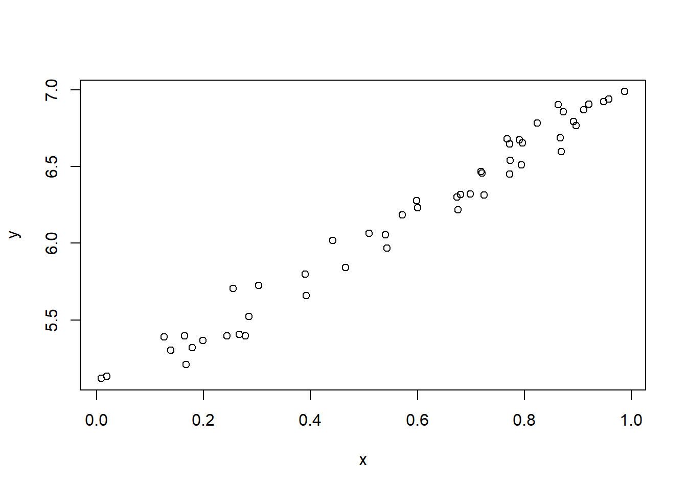
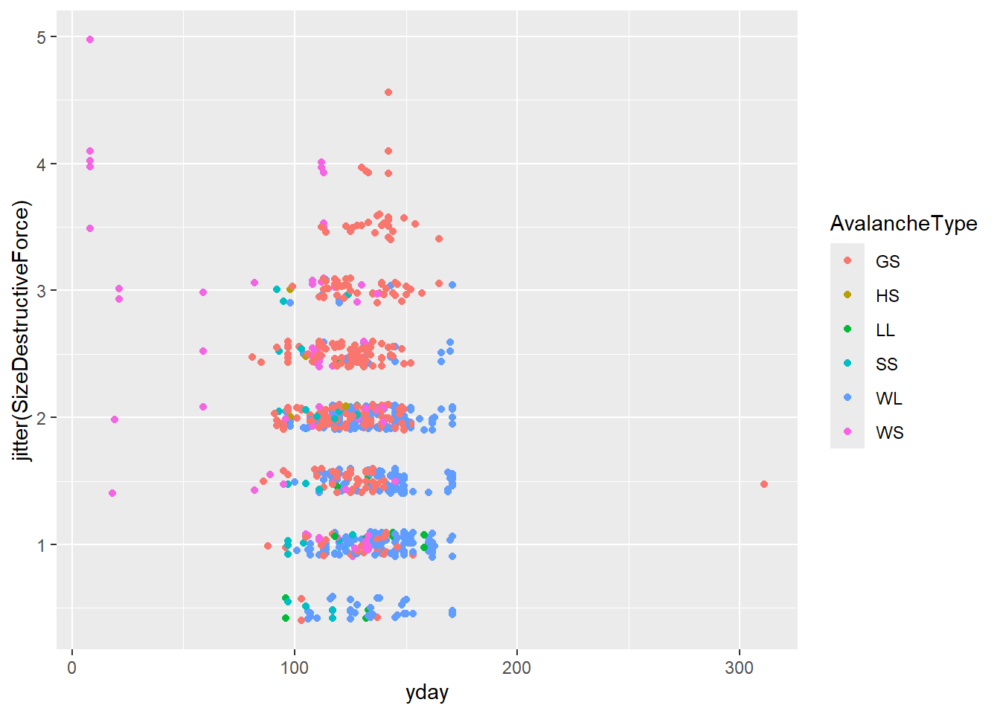
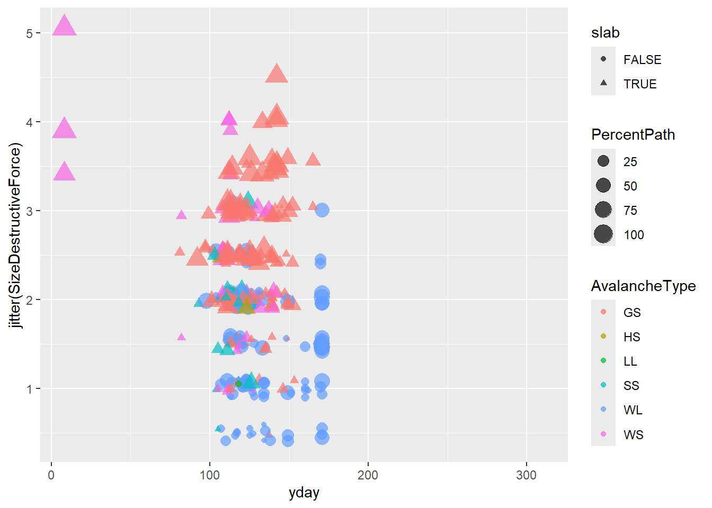
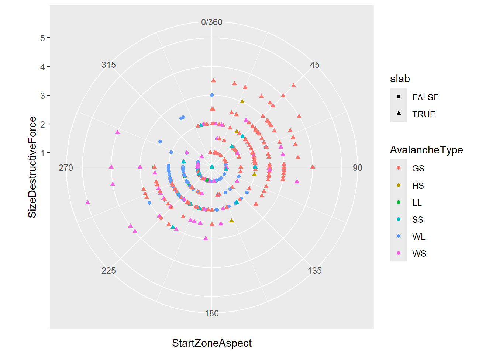
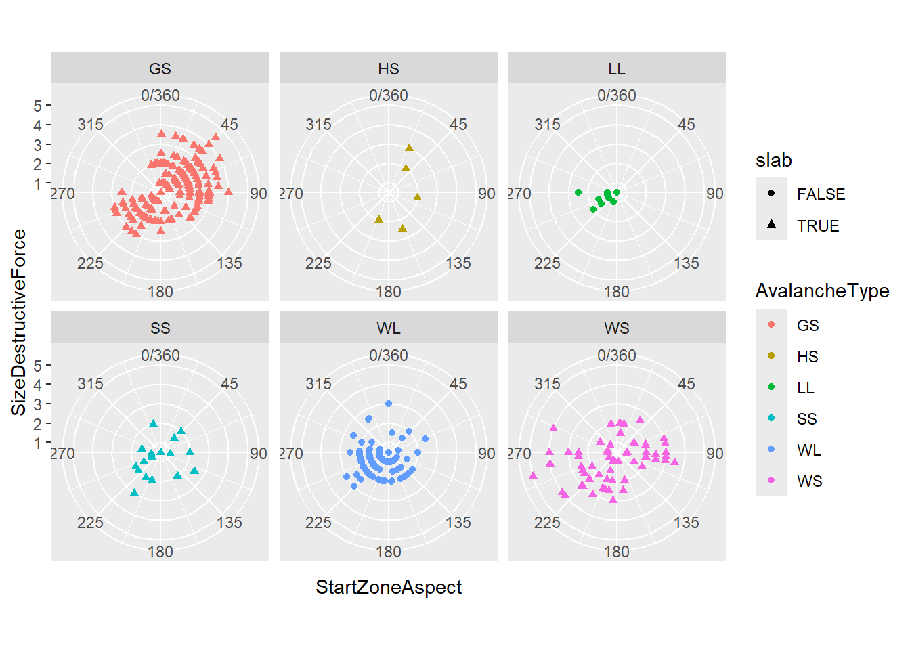
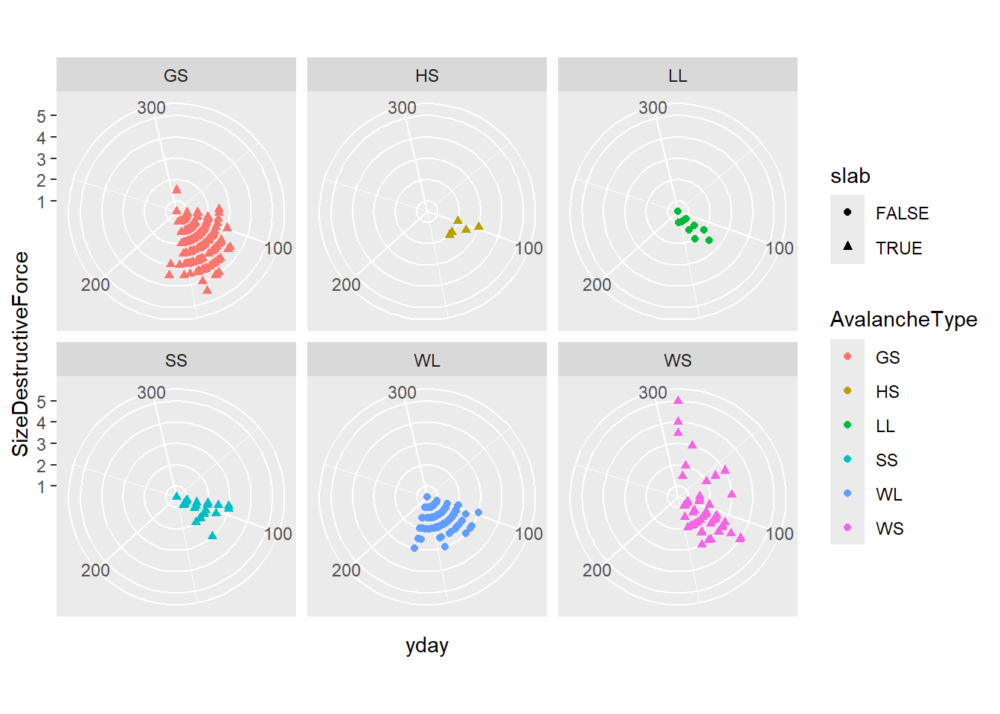
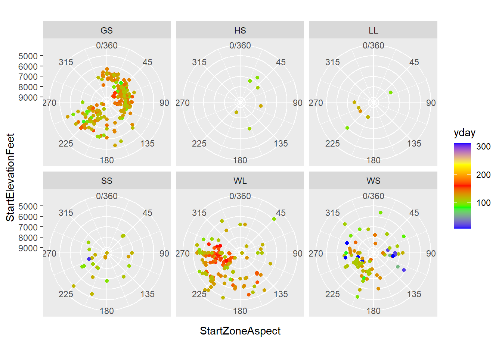

2+3[1] 52*3[1] 62^3[1] 8sqrt(9)[1] 3# This is a comment. R will ignore any code preceded by a number sign. This lab introduces some basic data concepts, and you will begin exploring data in R. We will use RStudio, which is an IDE (Interactive Development Environment) that lets us use R in a convenient interface.
In this course, we will either be using real data or developing simulations to model real situations. In either case, you will hopefully find yourself with questions beyond what is addressed in the labs. Exploration is encouraged and will make you a better data analyst.
Today we begin with the fundamental building blocks of R and RStudio: the interface, reading in data, basic commands and some visualization.
When you start RStudio the first time, you will see something like this:

The window is split into three panels. Soon the left side of the window will grow another panel. Each panel has multiple tabs.
The panel in the upper right shows your workspace - the data, variables and special functions that you are currently working with - in the Environment tab. The History tab lists the commands that you’ve previously entered.
The lower right panel has a simple browser in the Files tab, displays graphics in the Plots tab, helps you install and load additional libraries of functions and data in the Packages tab, and lets you navigate the Help system.
The panel on the left is where the action happens. The main tab shows the Console. The > is called the prompt. The prompt is prompting you to type a command. Initially, interacting with R is all about typing commands and interpreting the output.
To get you started, enter the following commands at the R prompt (i.e. right after > on the console). You can either type them in manually or copy and paste them from this document.
2+3[1] 52*3[1] 62^3[1] 8sqrt(9)[1] 3# This is a comment. R will ignore any code preceded by a number sign. Two very important commands: <- is called “left assignment”. Whatever is on the left of the arrow becomes a name you can use to refer to whatever is on the right of the arrow. You can use = instead, but the arrow makes it clear what is being defined. The other arrow -> for “right assignment” can also be used. c() stands for “concatenate” or maybe “combine”. It makes a list of whatever is inside the parentheses.
x <- c(1,3,2,5) # This makes a list with the numbers 1, 3, 2, 5 and calls it x.
# Notice that x just appeared in your workspace in the upper right.
x # This reports the current value of x.[1] 1 3 2 5x+2 # You can do arithmetic to a list. This adds 2 to each element of x.[1] 3 5 4 7y <- c(4,2,-3,0) # Or you can make another list.
x+y # And add the two lists. [1] 5 5 -1 5R is a language for doing statistics, so of course, some of the first commands you will use are for basic statisitical computations.
mean(x)[1] 2.75sum(x)[1] 11max(x)[1] 5min(x)[1] 1length(x)[1] 4We can redefine x, even in terms of the current value of x.
x <- c(1,6,2)
x[1] 1 6 2x <- x*2
x [1] 2 12 4Any command or object that comes with R has a help file. Type a question mark before something that you would like to know about. For example try ?mean.
R can do matrix arithmetic too, but be careful to tell it what you want it to do. For matrix multiplication use %*% instead of *.
x<-matrix(data=c(1,2,3,4), nrow=2, ncol=2)
x [,1] [,2]
[1,] 1 3
[2,] 2 4x^2 [,1] [,2]
[1,] 1 9
[2,] 4 16x%*%x [,1] [,2]
[1,] 7 15
[2,] 10 22R has many tools based on standard statistical distributions. For example, we can to generate data from assumptions about our variables.
x<-runif(50) # Generate 50 random numbers from a uniform distribution.
y<-rnorm(50,mean=2*x+5,sd=.1) # Add Gaussian noise with sd=1.
plot(y~x) # Show the data.
cor(x,y) # Correlation coefficient.[1] 0.98706R is an open-source programming language, meaning that users can contribute packages that make our lives easier, and we can use them for free. For this lab, and many others in the future, we will use the following:
R packages: for data wrangling and data visualizationR package: for data and custom functions related to Bolker, Ecological Models and Data in R.In the lower right hand corner click on the Packages tab. Type the name of each of these packages (tidyverse, emdbook) into the search box to see if they have been installed. If these packages do not appear when you type in their name, install them by copying and pasting or typing the following two lines of code into the console of your RStudio session. Be sure to press enter/return after each line of code. The tidyverse umbrella package contains many other packages, so it may take a little while to install.
install.packages("tidyverse") # This package is large, so this command might take a while to complete. While your computer is computing, you might read ahead to the part where the data are described.
install.packages("emdbook")After pressing enter/return, a stream of text will begin, communicating the process R is going through to install the package from the location you selected when you installed R. If you were not prompted to select a server for downloading packages when you installed R, RStudio may prompt you to select a server from which to download; any of them will work.
You only need to install packages once, but you need to load them each time you relaunch RStudio. We load packages with the library function. Copy and paste or type the the following two lines in your console to load the tidyverse and emdbook packages into your working environment.
library(tidyverse)Warning: package 'ggplot2' was built under R version 4.3.3Warning: package 'tidyr' was built under R version 4.3.3library(emdbook)We are choosing to use the tidyverse package because it consists of a set of packages necessary for different aspects of working with data, from loading data to wrangling data to visualizing data to analyzing data. Additionally, these packages share common philosophies and are designed to work together. You can find more about the packages in the tidyverse at tidyverse.org.
From the drop down menu in the upper left with the green + on a blank page, create a new R Script. This will give you a panel in the upper left of your RStudio window where you can input R commands. Unlike commands typed into the console, these commands will not be executed until you tell R to do so.

In the upper right of your screen, choose the History tab and select some or all of the code you just entered. You can use Shift+Mouse to select multiple lines. Press the To Source button - you should see those lines you just entered appear in your script window. This is handy for when you are trying various things in the console and find some commands that you want to save. Since you only need to install packages once on your computer, you probably want to either delete the lines with the install.packages commands, or comment them out by putting a # at the beginning of each line.
You can run commands from your script by putting your cursor on the line that you would like to run and either clicking on the Run button in the upper right of the script window, or using Control+Enter (Command+Enter on a Mac). Run a command from your script and observe that the command and its output appeared in the console. You can run just part of a line or multiple lines by selecting exactly what you want to run from your script with the mouse.
As you work in R, you will find yourself going back and forth between entering commands at the prompt and composing scripts.
The point of working with R is to use actual data. However you acquire your data, it is easiest to get it in to R if you have it or can save it as a spreadsheet in comma separated variable (.csv) format. More on that in a moment. See https://datacarpentry.org/spreadsheet-ecology-lesson/ for a good lesson on organizing your data in a spreadsheet in preparation for analyzing it in R.
The data that we will use for this lab are here: GTSR Avalanche Occurrences 2003-2020.csv. Download it, find the downloaded file on your computer (it’s probably either in Downloads or on your Desktop), and read on.
Keeping your work organized will make your life easier. For each project (lab, seminar, thesis, experiment, et cetera) it is good practice to set up a folder on your computer as the project’s working directory. A good first task on saving a dataset to a working directory: immediately make a copy of your data and change the name of the file to original_data and then make a point of not changing that file. Now if you need to you can start any analysis over.
As your project gets bigger, you might find that it makes sense to create subdirectories of your working directory. Common examples are data, images, figures, documents, etc.
R needs to know your working directory. It is displayed at the top of the console window. You can set it with the command setwd, or using the More menu on the Files tab in the lower right window.
Let’s save your script. Click on the disk icon in your script window (the upper left) or choose Save from the File menu.
Optional: RStudio has an organizational system that can be handy. In the upper right there is a menu that says “Project: (None)”. From this menu choose New Project and associate the project with your working directory. This way, if you have multiple projects in your life, they don’t clutter each other and you have some ability to customize how you work on each. You will have to reopen the script you just saved after you move to your new project.
Often (ideally?) data are provided to us in spreadsheets. People often use program like Excel to record data in a lab or fieldwork. One of the skills of a good Data Engineer is the ability to effectively query a database and return a useful “flat” dataset, where rows are observations and columns are variables. The value encoded in the cell (observation, variable) is the value of the specified variable during the specified observation. A great format for saving spreadsheets is comma separated variable or csv. When saving a spreadsheet in Excel, you can create a csv by choosing “Save As” from the File menu and then selecting csv as the format. This is probably the most common way that data is recorded and loaded into R. Using a simple format like csv instead of xlsx or another spreadsheet file format makes it easier to load the data into R, and less likely that future changes in technology will make the data unreadable.
When saving a multiple sheet Excel spreadsheet to csv, you have to save each sheet individually, and other than column headings and possibly metadata at the top of the sheet, there should be nothing other than the data, and no formatting such as dollar signs, units or commas in large numbers.
Here’s the link to the data again, for reference. GTSR Avalanche Occurrences 2003-2020.csv. Avalanche activity is actively monitored along the Going to the Sun Road in Glacier National Park. Here is the website of the program that does the monitoring.
The observations in this data set are individual avalanches. Variables include the date, the size, destructive force, elevation, aspect and slope angle, as well as the avalanche type, such as slab or loose and the observer who recorded the avalanche.
Take a moment to think about the questions that you might want to ask these data. It might help to put yourself in the shoes of an employee of Glacier National Park who relies on this information to plan for activity in parts of the park accessed by this road.
A very general question is: In what way is the destructive force of an avalanche a function of the other recorded variables? A more specific version of this might focus on the seasonal differences exhibited by slab and loose avalanches - for example can we show that large wet slab avalanches in the spring are potentially particularly destructive?
In order to answer these questions, we look at the data.
library(ggplot2) # part of tidyverse, you can skip this line if it loaded above
library(lubridate) # ditto
library(dplyr) # ditto
library(readr) # ditto
avalanches <- read_csv("GTSR Avalanche Occurrences 2003-2020.csv",
col_types = cols(Date = col_date(format = "%m/%d/%Y"),
Time = col_time(format = "%H:%M:%S")))
avy_paths <- sort(table(avalanches$PathName), decreasing=T)
View(avalanches)Hopefully you are now looking at the data in the upper left pane of RStudio. Scroll through the columns and see if you can find some variables that seem interesting or potentially useful. The following code will step you through first some initial investigation and cleaning of the data.
summary(avalanches) ID RecorderName Date DateAccuracy
Min. : 9.0 Length:875 Min. :2003-04-06 Length:875
1st Qu.:235.5 Class :character 1st Qu.:2006-04-06 Class :character
Median :459.0 Mode :character Median :2012-04-11 Mode :character
Mean :460.7 Mean :2011-05-25
3rd Qu.:688.5 3rd Qu.:2016-04-16
Max. :908.0 Max. :2020-06-13
NA's :2
Time TimeAccuracy PathName SubPathName
Length:875 Length:875 Length:875 Length:875
Class1:hms Class :character Class :character Class :character
Class2:difftime Mode :character Mode :character Mode :character
Mode :numeric
AffectRoad HitRoad RoadPlowed TimeToClear
Length:875 Length:875 Length:875 Min. :0.0000
Class :character Class :character Class :character 1st Qu.:0.1000
Mode :character Mode :character Mode :character Median :0.2500
Mean :0.4643
3rd Qu.:0.5000
Max. :4.0000
NA's :599
RoadDamageLength AvalancheType AvalancheTrigger AvalancheBedSurface
Min. : 0.00 Length:875 Length:875 Length:875
1st Qu.: 0.00 Class :character Class :character Class :character
Median : 0.00 Mode :character Mode :character Mode :character
Mean :10.45
3rd Qu.:10.00
Max. :70.00
NA's :864
PercentPath PercentSubPath HorizStartZoneLoc VertStartZoneLoc
Min. : 1.00 Min. : 1.00 Length:875 Length:875
1st Qu.: 10.00 1st Qu.: 20.00 Class :character Class :character
Median : 25.00 Median : 40.00 Mode :character Mode :character
Mean : 31.14 Mean : 45.86
3rd Qu.: 50.00 3rd Qu.: 73.75
Max. :100.00 Max. :100.00
NA's :543 NA's :809
SizeRelativeToPath SizeDestructiveForce ObservationPoint MaxCrownDepth
Min. :1.00 Min. :0.500 Length:875 Min. : 0.1
1st Qu.:1.00 1st Qu.:1.500 Class :character 1st Qu.: 1.0
Median :2.00 Median :2.000 Mode :character Median : 2.0
Mean :1.89 Mean :1.888 Mean : 2.5
3rd Qu.:2.00 3rd Qu.:2.500 3rd Qu.: 3.0
Max. :5.00 Max. :5.000 Max. :20.0
NA's :320 NA's :51 NA's :546
AveCrownDepth CrownWidth StartElevationFeet VerticalRunFeet
Min. : 0.1 Min. : 0.1 Min. :4600 Min. : 10
1st Qu.: 1.0 1st Qu.: 1.0 1st Qu.:6800 1st Qu.: 500
Median : 2.0 Median : 2.0 Median :7300 Median : 855
Mean : 2.5 Mean : 2.5 Mean :7204 Mean :1179
3rd Qu.: 3.0 3rd Qu.: 3.0 3rd Qu.:7750 3rd Qu.:1462
Max. :20.0 Max. :20.0 Max. :9500 Max. :5200
NA's :546 NA's :546 NA's :283 NA's :307
StartZoneAspect StartZoneSlope StartZoneAlpha RoadBurialLength
Min. : 0.0 Min. :25.00 Min. :21.00 Min. : 0.00
1st Qu.: 90.0 1st Qu.:36.00 1st Qu.:36.25 1st Qu.: 5.00
Median :210.0 Median :38.00 Median :37.50 Median : 10.00
Mean :176.1 Mean :37.68 Mean :35.33 Mean : 19.82
3rd Qu.:252.0 3rd Qu.:40.00 3rd Qu.:39.50 3rd Qu.: 20.00
Max. :353.0 Max. :46.00 Max. :40.00 Max. :300.00
NA's :254 NA's :834 NA's :869 NA's :545
RoadBurialDepth Comments
Min. : 0.000 Length:875
1st Qu.: 1.200 Class :character
Median : 2.000 Mode :character
Mean : 2.528
3rd Qu.: 3.000
Max. :20.000
NA's :547 table(avalanches$PathName, avalanches$AvalancheType)
GS HS LL SS WL WS
1st Chute Below Arches 1 0 0 1 7 0
2nd Chute Below Arches 1 0 0 0 6 0
54-1 2 0 0 1 3 1
54-2 0 0 0 2 1 3
Above Lunch Creek Corner 0 0 0 0 1 0
Alder Trail 0 0 0 3 5 0
Alps 0 0 2 0 4 0
Alps 1 1 0 0 0 9 0
Alps 2 0 0 0 0 16 0
Alps 3 0 0 0 0 12 1
Bear Hat East Face 0 0 0 0 0 1
Beargrass 3 0 0 0 10 0
Below Big Drift 0 0 0 0 2 0
Below East Tunnel 0 0 0 0 0 1
Big Bend 14 0 0 11 12 19
Big Drift 0 0 0 1 1 0
Bird Woman 2 0 0 0 13 1
Bird Woman Basin Pass 0 0 0 0 0 1
Bird Woman Falls 0 0 0 0 0 0
Boyack's 0 0 1 0 0 0
BPR 0 0 0 0 17 0
Chute Above Arches 1 0 0 0 16 1
Chute Above Russ' Slide 0 0 0 0 4 0
Chute Above Triple Arches 0 0 0 0 2 0
Chute Below Russ' 0 0 0 0 1 0
Chute Below SBRC 0 0 0 0 3 1
Clements 0 0 0 0 1 0
Clements - Oberlin Saddle 0 0 0 1 0 0
Clements Mountain 0 1 0 0 0 0
Clown Couloir 0 0 0 0 6 0
Garden Wall 4 0 0 0 1 1
Geduhn-Trapper Ridge 2 0 0 0 0 0
Glacier Wall 2 0 0 0 1 0
Going-to-the-Sun Mountain 0 0 0 0 0 1
Granite Creek 12 0 0 0 5 1
Greater Granite 4 0 0 1 2 5
Greater Granite Creek 1 0 0 0 0 0
Grizzly 1 0 0 0 6 0
GWWX Ridge 0 0 0 0 0 0
Half Tunnel 0 0 0 0 4 0
Haystack 6 0 0 0 1 0
Haystack Creek 24 1 9 6 16 23
Heaven's Gate 2 0 0 0 0 0
Heaven's Peak Glide Pocket #2 1 0 0 0 0 0
Heaven's Peak Glide Pocket #3 1 0 0 0 0 0
Heaven's Peak Glide Pocket #4 1 0 0 0 0 0
Heaven's Peak Glide Pocket #6 1 0 0 0 0 0
Heavens East Ridge 0 0 0 1 0 0
Heavens Gate 29 0 0 2 1 1
Heavens Peak Corner Pocket 1 0 0 0 0 0
Heavens Peak East 1 0 0 0 0 0
Heavens Peak East Ridge 45 2 0 0 2 2
Heavens Peak Glide Pocket #1 1 0 0 0 0 0
Heavens Peak Glide Pocket #5 1 0 0 0 0 0
Heavens Peak North Ridge 1 1 0 3 1 2
Heavens Peak Remnant Glacier 1 0 0 0 0 0
Heavens Peak South Ridge 0 0 0 0 0 1
Heavy Runner Mountain 0 0 0 0 0 1
HPRG 32 0 0 1 1 0
Little Granite 0 0 0 2 0 1
Longfellow Peak 0 0 0 0 1 0
Lower Grizzly 0 0 0 0 1 0
Lower Slopes 0 0 0 0 26 0
Middle Slopes 0 0 2 0 29 0
Mt Siyeh 0 0 0 0 1 0
Mt. Brown 1 0 0 0 0 2
Mt. Cannon 1 0 0 0 1 1
Mt. Geduhn 4 0 0 0 0 0
Mt. Gould 3 0 0 2 1 0
Mt. McPartland 1 0 0 0 0 0
Mt. Oberlin 0 0 0 0 1 0
Mt. Piegan 1 0 0 0 2 6
Mt. Siyeh 0 0 0 0 0 1
Mt. Vaught 8 0 0 0 0 1
No Stump Point 0 0 0 0 0 2
Path Below SBRC 0 0 0 0 1 0
Peak 7774 39 0 0 0 0 0
Peak 7850 32 0 0 0 1 1
Peak 8015 7 0 0 0 0 0
Peak 8015 Glide Path 1 0 0 0 0 0
Rainbow Peak 0 0 0 0 1 0
Red Rock 0 0 0 2 3 2
Red Rocks 0 0 0 0 1 0
Rim Rock 0 0 1 0 7 0
Russ' Slide 0 0 1 0 10 0
SBRC 7 0 1 0 12 0
Siyeh Bend 0 0 0 0 2 1
Slopes 0 0 2 0 38 0
Slopes Below Big Drift 0 1 0 0 8 0
Slopes Below East Tunnel 0 0 0 0 9 0
Stanton South Face 0 0 0 0 0 3
Stanton/Vaught Bowl 0 0 0 0 1 0
Trapper Peak 5 0 0 0 0 0
Triple Arches 8 0 0 0 18 1
Upper Slopes 0 0 0 0 15 0
Upper snowfield above the East Face of Heaven's Peak 1 0 0 0 0 0
Weeping Wall 8 0 0 0 6 0unique(avalanches$AvalancheType)[1] "WL" "GS" "WS" "LL" "SS" "HS" NA avalanches <- avalanches %>%
filter(!is.na(AvalancheType))
avalanches$slab <- avalanches$AvalancheType %in% c('WS', 'GS', 'SS', 'HS')
avalanches$month <- month(avalanches$Date)
avalanches$yday <- yday(avalanches$Date)
ggplot(avalanches, aes(yday, jitter(SizeDestructiveForce), color=AvalancheType))+
geom_point()Warning: Removed 53 rows containing missing values or values outside the scale range
(`geom_point()`).
ggplot(avalanches, aes(yday, jitter(SizeDestructiveForce), color=AvalancheType, shape=slab, size=PercentPath))+
geom_point(alpha=0.7)Warning: Removed 560 rows containing missing values or values outside the scale range
(`geom_point()`).
ggplot(avalanches, aes(StartZoneAspect, SizeDestructiveForce, color=AvalancheType, shape=slab))+
geom_point()+
coord_polar(start = 0, direction = 1) + # Circular mapping
scale_x_continuous(limits = c(0, 360), breaks = seq(0, 360, 45))Warning: Removed 261 rows containing missing values or values outside the scale range
(`geom_point()`).
ggplot(avalanches, aes(StartZoneAspect, SizeDestructiveForce, color=AvalancheType, shape=slab))+
geom_point()+
coord_polar(start = 0, direction = 1) + # Circular mapping
scale_x_continuous(limits = c(0, 360), breaks = seq(0, 360, 45))+
facet_wrap(~AvalancheType)Warning: Removed 261 rows containing missing values or values outside the scale range
(`geom_point()`).
ggplot(avalanches, aes(yday, SizeDestructiveForce, color=AvalancheType, shape=slab))+
geom_point()+
coord_polar(start = 0, direction = 1) + # Circular mapping
scale_x_continuous()+
facet_wrap(~AvalancheType)Warning: Removed 53 rows containing missing values or values outside the scale range
(`geom_point()`).
ggplot(avalanches, aes(StartZoneAspect, StartElevationFeet, color=yday))+
geom_point()+
coord_polar(start = 0, direction = 1) + # Circular mapping
scale_x_continuous(limits = c(0, 360), breaks = seq(0, 360, 45))+
facet_wrap(~AvalancheType)+
scale_y_reverse()+
scale_color_gradientn(colors = c("blue", "green", "red", "yellow", "blue"), values = c(0, 90, 180, 270, 360)/360)Warning: Removed 324 rows containing missing values or values outside the scale range
(`geom_point()`).